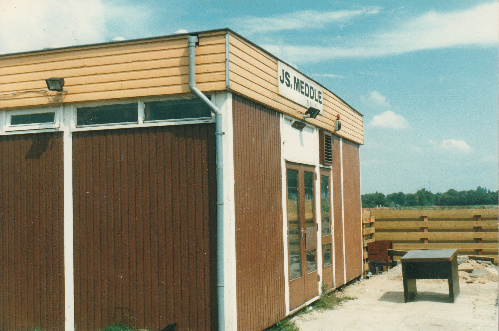
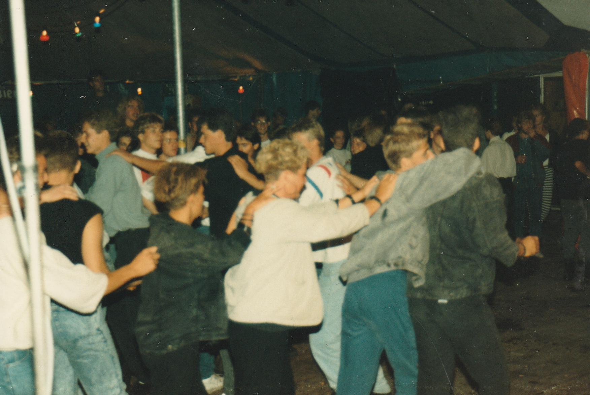
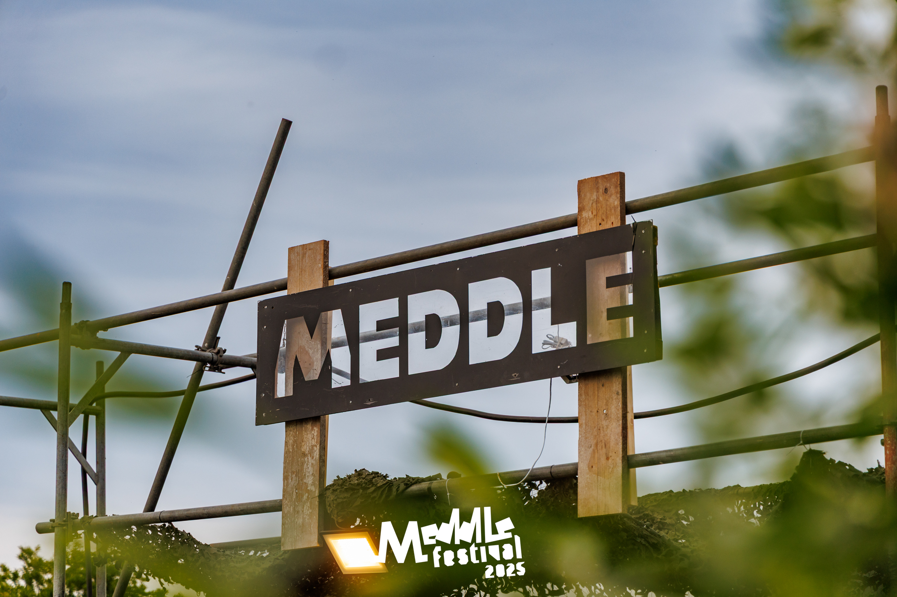
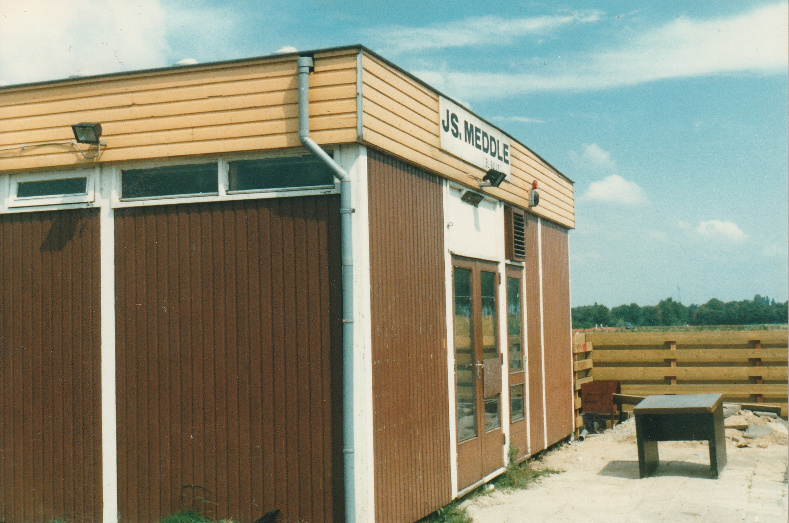
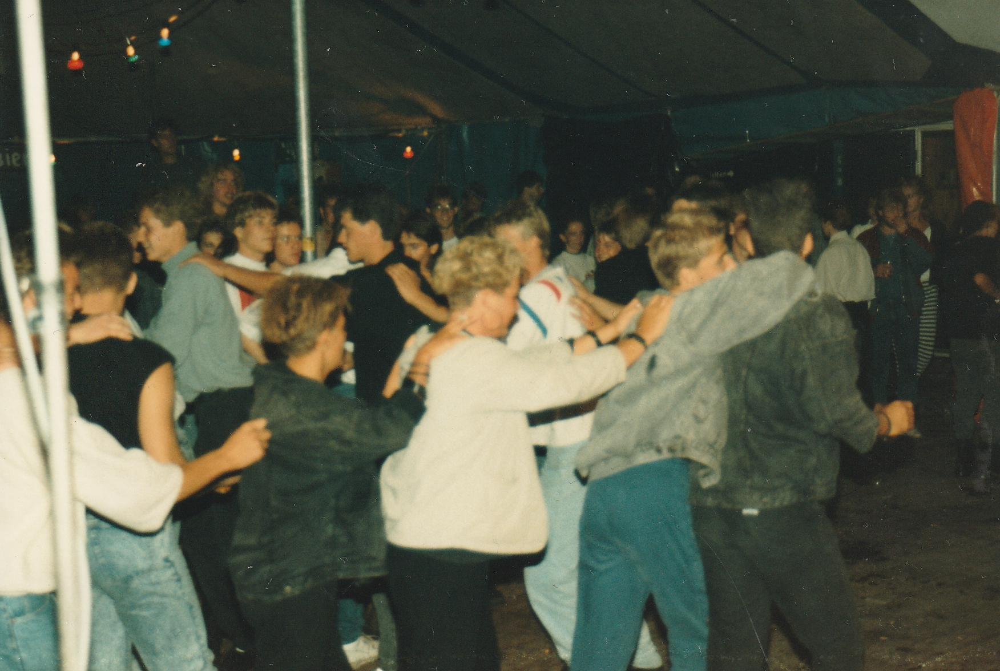
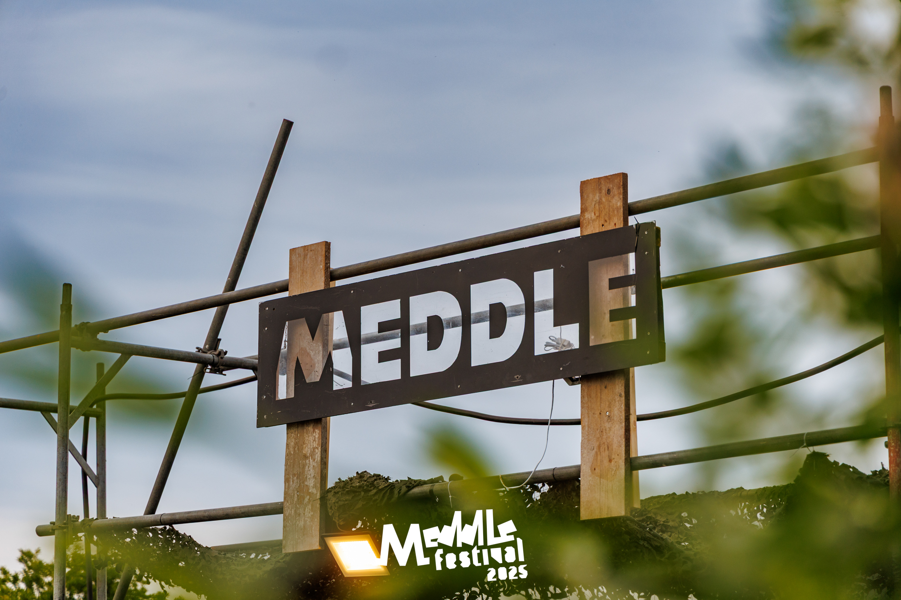

Geschiedenis:
Begin jaren 70 had een vriendengroep bestaande uit Jan Spring in 't Veld, Jos Hoogenboom, Nico Disseldorp en John van Berkel een gezamenlijke passie voor muziek. Het luisteren naar muziek en samen muziek maken was hun grootste hobby. Dit gebeurde toen der tijd in de zolderkamer bij de familie Disseldorp in Rijpwetering. In 1972 oontstond het idee om deze muziek aan een breder publiek te presenteren. Hiervoor werd de bollenschuur van tuinder Cees Disseldorp ingericht met twee platenspelers en een cassetterecorder. Hierdoor ontstond er een gezellige boel, bestaande uit vrienden en familie.
Na een tijdje werd het toiletgebruik door de gasten iets teveel voor mevrouw Disseldorp en moest er gezocht worden naar een nieuw stekkie. Dit werd uiteindelijk gevonden in een klaslokaal van basisschool St. Jozef in Rijpwetering. Iedere zondagmiddag werd het klaslokaal omgebouwd tot een discoruimte. Doordat steeds meer mensen deze plek wisten te vinden ontstond het idee om er een echte jeugdsocieteit van te maken. Er werd een verenging opgesteld en hier hoorde natuurlijke een goede naam bij: "Meddle"
Toen Meddle zo goed liep dat ook het klaslokaal te klein werd, moest er weer worden gezocht naar een nieuwe locatie. Door de fusie van de voetbalverenigingen V.V.O.A en R.K.S.V Rijpwetering in 1979 onstond Roac. Hierdoor kwam de voetbalkantine van V.V.O.A vrij. Een houten gebouw aan de kop van het hobbelige voetbalveld in Oud Ade, waar nu de volkstuinen zijn. Dit gebouwtje kon voor een klein bedrag worden overgenomen en na een aantal weken flink schilderen en timmeren kreeg Meddle hier zijn eerste eigen stek. Een ideale plek net buiten het dorp en goed bereikbaar. Hier werd ook voor het eerst het festival georganiseerd.
Na verloop van tijd begon het gebouw zijn gebreken te vertonen. In Leiderdorp zou er een bankgebouw door Meddle overgenomen kunnen worden. Deze werd door leden van Meddle een tijdje later vakkundig uit elkaar gehaald en in Oud Ade tegenover de oude voetbalkantine van V.V.O.A weer netjes in elkaar gezet. Er werd een dansvloer gemaakt en zo onstond er voor Meddle een prachtig nieuw onderkomen.
Meddle Nu:
Sinds de corona periode dient Meddle eigenlijk alleen maar als afterparty plek. De jeugd weet onze societeit steeds minder te vinden als er feesten worden georganiseerd. Dit is ook te merken tijdens het jaarlijkse Meddle Festival.
Tijd voor verandering dus!
De oude statuten uit 1974 en 1984 werden bijvoorbeeld helemaal vernieuwd. Ook kreeg het pand een volledige make-over, deze had namelijk een behoorlijke onderhoudsachterstand.
Ons doel? Meddle nog mooier maken dan dat het was.
In ons nieuwe gebouw, wat is ingericht als een bruine kroeg, kunnen vrienden weer gezellig met z'n alle een biertje doen, sport kijken en zullen er nieuwe feestavonden worden georganiseerd. Deze zullen voor jong en oud zijn.
Feesten in Meddle:
Jaarlijks worden er verschillende feesten georganiseerd door Meddle. Denk hierbij aan de Christmas for Lonely Losers of het Carnaballo feest. Daarnaast wordt natuurlijk het Meddle Festival elk jaar georganiseerd. De link naar de website over het Meddle Festival is ook op deze website te vinden.
Zoals eerder beschreven is Meddle bezig met een nieuwe opmars. Hiervoor zullen verschillende activiteiten worden gehouden, voor jong en oud! Deze feesten kunnen teruggevonden worden onder de "Activiteiten" pagina op deze website. Mochten er leuke ideeen zijn voor nieuwe activiteiten of wilt u onze vrijwilligers helpen met het organiseren van een activiteit. Mail dan naar plancommissie@meddle.nl
 




